12．阿波罗尼斯的数学著作
古典时期的另一伟大希腊数学家（就其总结和创造古典时代数学研究的门类这两重意义而论）是阿波罗尼斯（约公元前262—前190）。阿波罗尼斯生于小亚细亚西北部的城市佩尔加（Perga），该地区在他的一生中处于帕加蒙（Pergamum）的统治之下。他青年时代去亚历山大城，从欧几里得的门人那里学习数学。据目前所知道的材料，他嗣后卜居亚历山大城和当地的大数学家合作研究。他的主要著作是关于圆锥曲线的，但也写过其他方面的著作。他的数学才能是如此卓越，使他在当代及后世以“大几何学家”闻名。他作为天文学家的声誉也一样大。
我们知道在阿波罗尼斯时代以前早就有人研究圆锥曲线了。特别是老阿里斯塔俄斯和欧几里得都写过这方面的书。还有阿基米德的著作中（随后就要讨论）也包括这方面的一些结果。但阿波罗尼斯做了去粗取精和使之系统化的工作。他的《圆锥曲线》（Conic Sections）除了综合前人的成就之外，还含有非常独到的创见材料，而且写得巧妙、灵活，组织得很出色。按成就来说，它是这样一个巍然屹立的丰碑，以至后代学者至少从几何上几乎不能再对这个问题有新的发言权。这确实可以看成是古典希腊几何的登峰造极之作。
《圆锥曲线》一书分八篇共含487个命题。这几篇著作中，前四篇是从12、13世纪的希腊手稿复制出来的，其后三篇是从1290年的阿拉伯译本转译的。第八篇已失传，但17世纪哈雷（Edmond Halley）根据帕普斯书中的启示搞出一个整理本。
欧几里得的前人、欧几里得本人和阿基米德，都像柏拉图派学者梅内克缪斯最早所提出的那样，把圆锥曲线看成是从三种正圆锥割出的曲线。欧几里得和阿基米德都知道从其他两种圆锥也能割出椭圆，并且阿基米德还知道跟斜圆锥上所有母线相交的平面能在其上割出椭圆。他也许认识到在斜圆锥上能割出其他圆锥曲线。
但阿波罗尼斯是第一个依据同一个（正的或斜的）圆锥的截面来研究圆锥曲线理论的人。他也是第一个发现双曲线有两支的人。阿波罗尼斯的前人梅内克缪斯和其他人之所以要用三类直圆锥垂直于其一母线的截面，后人的一种猜测是，并不是因为他们不知道每种圆锥上也可以有别的圆锥曲线，而是因为他们要处理关于这种曲线的逆问题。对于给定的曲线，如果它们具有圆锥曲线的几何性质，在证明它们可以由圆锥上的截面得出时，对截面垂直于一根母线的情形是比较容易证明的。
我们先来考察第一篇中所述的关于圆锥曲线的定义和性质。给定一圆BC及圆所在平面外一点A（图4.20），则过A且沿圆周移动的一根直线便生成一双锥面。这圆叫圆锥的底。A到圆心的直线叫圆锥的轴（未画出）。若轴垂直于底，这是正圆锥；否则便是斜圆锥。设锥的一个截面与底平面交于直线DE。取底圆的垂直于DE的一条直径BC。于是ABC就是含有圆锥轴的一个三角形，叫做轴三角形。设这三角形与圆锥曲线交于P及P′（原文为交于PP′，似系笔误。——译者）。（PP′不一定是圆锥曲线的轴。）PP′M是由截面和轴三角形相交而定的直线(4)。设QQ′是圆锥曲线的平行于DE的一弦。因此QQ′未必垂直于PP′。阿波罗尼斯随即证明QQ′为PP′所平分，从而
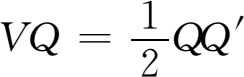
。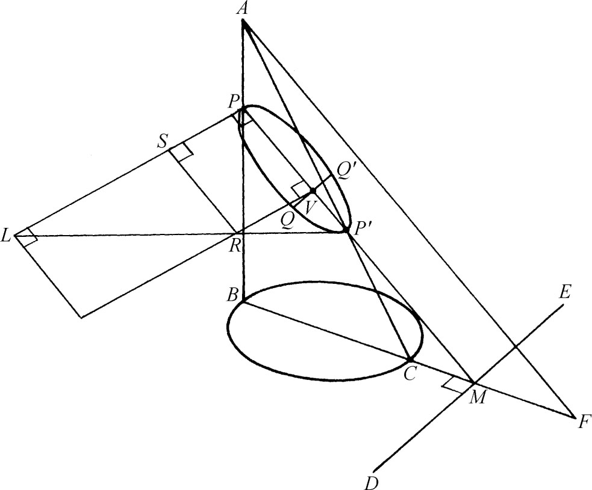
图4.20
现作AF平行于PM并交BM于F。再在截面上作PL垂直于PM。对椭圆和双曲线，取L使适合条件
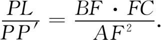
对抛物线，取L使适合
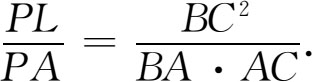
在椭圆和双曲线的情形下，我们作P′L。从V作VR平行于PL交P′L于R。（在双曲线的情形下，P′在双曲线的另一支上，须延长P′L才能定出R。）
阿波罗尼斯在作出一些辅助线之后（这里不细讲），证明对于椭圆和双曲线有
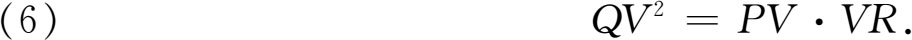
阿波罗尼斯把QV称作圆锥曲线的一个纵坐标线，所得结果（6）便说明纵坐标线的平方等于作在PL上的一个矩形PV·VR。他又证明在椭圆的情形下，这矩形未填足整个矩形PV·PL，而亏缺一个相似于矩形PL·PP′的矩形LR。因此椭圆的原名就叫“亏曲线”（ellipse）（第6节）。
在双曲线的情形下，（6）还是成立的，但作图的结果是VR大于PL，所以矩形PV·VR超出作在PL上的矩形PL·PV，而所超出的那个矩形LR相似于矩形PL·PV。因此双曲线的原名就叫“超曲线”（hyperbola）。在抛物线的情形下，（6）不成立，而有
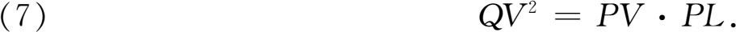
所以等于QV2的那个矩形恰好是与PL相齐的矩形PV·PL。因此抛物线的原名就叫“齐曲线”（parabola）。
抛物线（齐曲线）、椭圆（亏曲线）和双曲线（超曲线）之称是阿波罗尼斯引入的，它们取代了以前梅内克缪斯所用的直角圆锥曲线、锐角圆锥曲线和钝角圆锥曲线之称。阿基米德书里出现抛物线和椭圆之称的地方［如在他的《抛物线的求积》（Quadrature of the Parabola）中，见第5章第3节］，是后人抄录时改过来的。
方程（6）和（7）是圆锥曲线的基本平面性质。阿波罗尼斯推出这两个性质之后就不再利用圆锥而直接从这两个方程推出曲线的其他性质。阿波罗尼斯用PV、纵坐标线或半弦QV，以及几何等式（6）和（7）推出性质的做法，实际上就相当于我们今天用横坐标、纵坐标和圆锥曲线方程推出曲线性质的做法。当然在阿波罗尼斯的做法里没有用到代数。
我们很容易把阿波罗尼斯得出的基本性质翻译成近世坐标几何中的语言。记PL（阿波罗尼斯称它为正焦弦或纵线参量）之长为2p，记直径PP′之长为d，若x是从P点量起的距离PV，y是距离QV（这相当于应用斜坐标），则从（7）立即可以看出抛物线的方程是
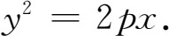
对于椭圆，我们先从定义它的方程（6）得出
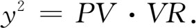
但
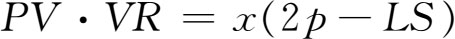
。又因矩形LR相似于矩形PL·PP′，所以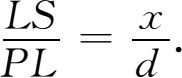
故
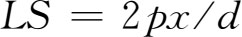
。于是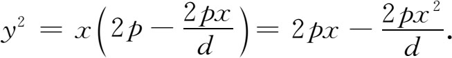
对于双曲线，我们有
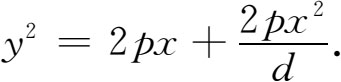
在阿波罗尼斯的做法里，抛物线的d是无穷大，由此可以看出怎样把抛物线作为椭圆或双曲线的一种极限情形来处理。
为往下叙述阿波罗尼斯怎样处理圆锥曲线，需要讲一些概念的定义，它们在近世的几何学里也仍然是重要的。考察椭圆的一组平行的弦，例如图4.21中平行于PQ的一组弦。阿波罗尼斯证明这批弦的中点都在一直线AB上，而称AB为圆锥曲线的直径。（图4.20这个基本图形里的线段PP′便是一直径。）然后他证明，若过AB的中点C作直线DE平行于原来的那组弦，这DE将平分所有平行于AB的弦。DE叫做AB的共轭直径。在双曲线的情形下（图4.22），弦可能在每个分支之内，如PQ，直径是两个分支间所截的那一段（如果它被两个分支所截的话），如图中的AB。于是平行于AB的弦，如RH，就在两个分支之间。AB的共轭直径，如DE，则定义为AB与双曲线的正焦弦的比例中项，它并不与双曲线相交。抛物线的任一直径（即通过一组平行弦中点的直线）总是平行于对称轴的，但对于给定直径并没有共轭直径，因为平行于给定直径的每根弦都是无限长。椭圆或双曲线的轴是彼此互相垂直的两直径。抛物线的轴（图4.23）则是与相应弦相垂直的那个直径。
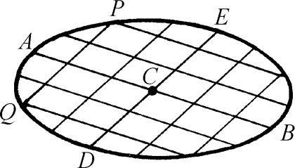 | 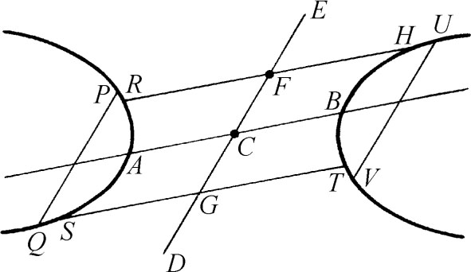 | 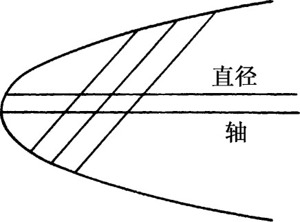 |
| 图4.21 | 图4.22 | 图4.23 |
阿波罗尼斯介绍了圆锥曲线的基本性质之后，就证明关于共轭直径的一些简单事实。第一篇中也论述圆锥曲线的切线。阿波罗尼斯把这切线看成是与圆锥曲线只有一个公共点且全部在圆锥曲线之外的直线。然后他证明过直径一端点（基本图4.20中的点P）所作平行于其相应弦（平行于该图中的QQ′）的直线将在圆锥曲线之外，且该直线与圆锥曲线之间不可能再有别的直线（见《原本》第三篇，命题16）。因此所论直线与圆锥曲线接触于一点，就是说，它是圆锥曲线在P处的切线。
另一个关于切线的定理指出下列事实：设PP′是抛物线的一直径（图4.24），而QV是它的一根相应弦。于是若在直径延长到曲线外的那部分上取一点T使TP＝PV，而V则是该直径与其相应弦QQ′的交点［原文为“从Q到直径PP′上的纵坐标线（弦）的足”］，则直线TQ与抛物线切于Q处。对椭圆和双曲线也有类似的定理。
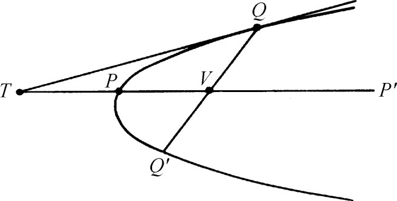
图4.24
阿波罗尼斯然后证明，若在基本图4.20中取圆锥曲线的其他直径而不取PP′，定义圆锥曲线性质的方程（6）及（7）仍照旧；但那时方程里的QV当然是指所取直径的相应弦了。他所做的，用我们的话来说，就相当于从一种斜坐标系变换到另一种斜坐标系。关于这一点，他还证明，从所取的任一直径和纵坐标线，可以变换到直径（轴）和纵坐标线相垂直的情形。这用我们的话来说就是变到直角坐标系。阿波罗尼斯还指出怎样从给定的某些数据（例如给定一直径、正焦弦、纵坐标线与直径的交角）来作出圆锥曲线。他是先作出有关的圆锥后获得所需圆锥曲线的。
第二篇一开头讲双曲线渐近线的作法和性质。例如他不仅指出双曲线的渐近线存在，而且指出在曲线上的足够远处，曲线上一点与渐近线的距离小于任意给定的长度。然后他引入所给双曲线的共轭双曲线，并证明它同所给双曲线具有相同的渐近线。
第二篇的其余定理说明如何求一圆锥曲线的直径，求有心圆锥曲线的中心，求抛物线和有心圆锥曲线的轴。例如，若T是圆锥曲线外一点（图4.25），TQ与TQ′是圆锥曲线上在Q与Q′处的切线，V是弦QQ′的中点，则TV是直径。求圆锥曲线直径的另一方法是作两根平行弦；连接两弦中点的那根直线便是一直径。有心圆锥曲线的任何两直径的交点便是它的中心。这一篇最后讲怎样作圆锥曲线的切线，使其满足给定条件，例如，过给定的一点。
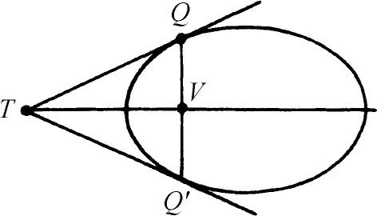
图4.25
第三篇开头论述关于切线与直径所成图形的面积的定理。那里的一个主要结果是（图4.26）：若OP与OQ是圆锥曲线的切线，且若RS是平行于OP的任一弦，R′S′是平行于OQ的任一弦，又若RS与R′S′交于J（在圆锥曲线内部或外部），则有
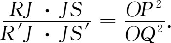
这定理是初等几何里一个熟知定理的推广：圆内两弦相交，每根弦被交点所分两段的乘积相等，因在圆的情形下，上式右边的
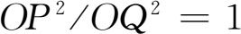
。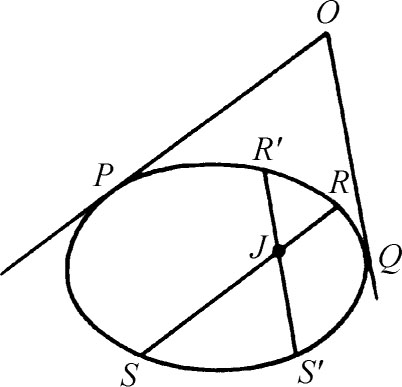
图4.26
第三篇后一部分论述极点和极线的所谓调和性质。如在图4.27中，若TP与TQ是圆锥曲线的切线，TRS是过T并交圆锥曲线于R及S，交PQ于I的任一直线，则
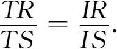
就是说，T外分RS的比等于I内分RS的比。PQ线叫点P处的极线，T，R，I，S可说是形成一组调和点。又若通过PQ中点V（图4.28）的任一直线交圆锥曲线于R及S，交过T且平行于PQ的直线于O，则有
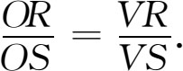
过T的那根直线是V的极线，而O，R，V及S是一组调和点。
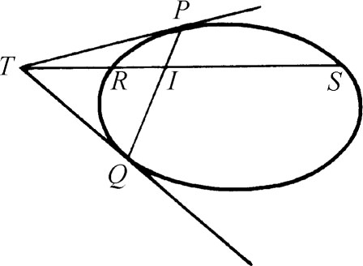 | 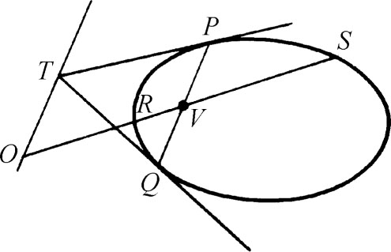 |
| 图4.27 | 图4.28 |
书中接着讲有心圆锥曲线的焦点的性质；但那里没有提到抛物线的性质。椭圆和双曲线的焦点（阿波罗尼斯没有焦点这个词）定义为（长）轴AA′上那样的两点F及F′，它们使AF·FA′＝AF′·F′A′＝2p·AA′/4（图4.29）。阿波罗尼斯对椭圆和双曲线证明：圆锥线上一点P与焦点相连的两线PF及PF′与P处的切线交于等角，且焦距PF与PF′之和（对椭圆的情形）等于AA′，焦距之差（对双曲线的情形）等于AA′。
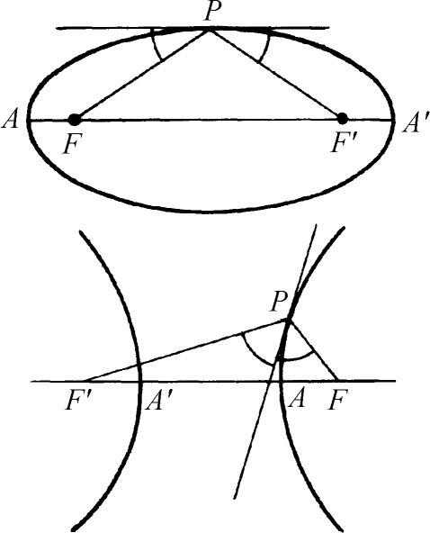
图4.29
书中没有谈准线，但圆锥曲线为到定点（焦点）距离与到定直线（准线）的距离之比为常数的点的轨迹，欧几里得是知道的，并由帕普斯述及且给出证明（第5章第7节）。
欧几里得曾部分地解决了一个著名的问题：设动点与四根固定直线的距离p，q，r，s满足条件
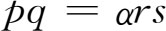
，其中α为已知，求该动点的轨迹。阿波罗尼斯在其《圆锥曲线》的序言中说这问题可用第三篇中的命题解决。这确实是能做到的；帕普斯也早知道这轨迹是一圆锥曲线。第四篇讲极和极线的其他性质。例如，有一个命题给出了从圆锥曲线外一点T向其作两切线的方法（图4.30）。作TQR及TQ′R′。令O是QR上对于T的第四个调和点，即TQ∶TR＝OQ∶OR；又令O′是Q′R′上对于T的第四个调和点。作OO′。于是P与P′是切点。
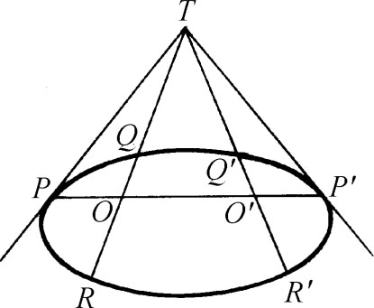
图4.30
该篇其余部分讲各种位置的圆锥曲线可能有的交点数目。阿波罗尼斯证明两圆锥曲线至多相交于四点。
第五篇在其新颖和独到之处最为出色。它论述从一特定点到圆锥曲线所能作的最长和最短的线。阿波罗尼斯先从有心圆锥线长轴上或抛物线轴上的特殊点讲起，求出从这些点到曲线的最大距离与最小距离。然后他取椭圆短轴上的点来照样做。他又证明，若O是任一圆锥曲线内的任一点，且若OP是从O到圆锥曲线的一极小或极大距离，则P处垂直于OP的直线是P处的切线；又若O′是OP延长线上在圆锥曲线外面的任一点，则O′P是从O′到圆锥曲线的极小线。切线在切点处的垂线如今叫法线，所以极大和极小线都是法线。阿波罗尼斯其次考察任一圆锥曲线的法线的性质。例如，在抛物线或椭圆任一点处的法线还与曲线交于另一点。然后他指出怎样从圆锥曲线内部或外部的给定点作该曲线的法线。
在考察从一点作向任一圆锥曲线的（相对）极大和极小线时，阿波罗尼斯定出了那些能作出两、三和四根这种线的点的位置。他对每种圆锥曲线定出了那样一些点的轨迹：从轨迹这一边的点能作一定数目的法线，而从轨迹另一边的点能作另一数目的法线。这轨迹现今叫圆锥曲线的渐屈线（但对它本身阿波罗尼斯未加讨论），或者说是圆锥曲线上“邻近”法线交点的轨迹，或者说是圆锥曲线上法线族的包络。例如，从椭圆渐屈线内部任一点可向椭圆作四根法线（图4.31），而从其外部任一点可作两根法线。（有例外的点。）在抛物线的情形，渐屈线叫半立方抛物线［最早为尼尔（William Neile，1637—1670）所研究］（图4.32）。从半立方抛物线上方平面的任一点能作抛物线的三根法线，从其下方平面的任一点只能作一根法线。从半立方抛物线上的点可以作两根。
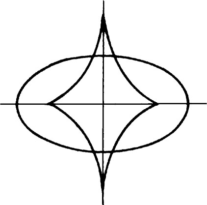 | 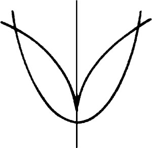 |
| 图4.31 | 图4.32 |
第六篇讲述全等圆锥曲线、相似圆锥曲线及圆锥曲线弓形。这弓形也像圆的弓形那样就是由圆锥曲线的弦所割出的一部分面积。阿波罗尼斯又指出怎样在一给定的直角圆锥上作出与一已给圆锥曲线相等的圆锥曲线。
第七篇里没有什么突出的命题。它讲述有心圆锥曲线两共轭直径的性质。阿波罗尼斯把这些性质和轴的相应性质加以比较。例如，若一椭圆或一双曲线的轴是a及b，而a′及b′是其两共轭直径，则a＋b＜a′＋b′。又，椭圆任意两共轭直径上的正方形之和等于其两轴上的正方形之和。对双曲线也有相应的命题，不过上面命题中的“和”要换成“差”。又，对于任一椭圆或双曲线，其任何两共轭直径与其夹角所定的平行四边形的面积，等于其两轴所定矩形的面积。
第八篇已失传。它所含命题，也许是关于怎样定出（有心）圆锥曲线的共轭直径，使其长度的某些函数具有给定的值。
帕普斯提到了阿波罗尼斯的其他六部数学著作。其中一部叫《论切触》（On Contacts），它的内容由韦达重新整理出来。该书中含有著名的阿波罗尼斯问题：任给三点、三线或三圆，或三者的任意组合，求作一圆过给定的点并切于所给直线或圆。许多数学家，包括韦达和牛顿都给出了这问题的解。
欧几里得和阿波罗尼斯的严格演绎式的数学论著，使人感到似乎数学家是用演绎推理搞出发明创造来的。但我们回顾欧几里得之前300年间的数学活动，就应该看到证明之前必先有猜想，综合之前必先有分析。事实上，希腊人对于从简单演绎法得出的命题是不很看得起的。希腊人把那些能从定理直接推出的结果称作系或衍论。普罗克洛斯把这种无需费多大力气得出的结果称作横财或红利。
我们还没有讲完希腊天才学者对数学的贡献。我们迄今所讲的是属于古典希腊时代的内容；我们还要讲公元前300年左右到公元600年那一段辉煌的时期。但在翻过这一页之前让我们提醒读者，古典时期的贡献有比数学内容更重要之处；它创造了我们今日所理解的那种数学。它坚持用演绎法来作证明，重视抽象而不重视具体，这些都决定了数学的性质。至于它选择一组最富于成果而又非常易于为人接受的公理的这种做法，它对几百个定理的猜测和证明，则又大大推动了这门科学的向前发展。
参考书目
Ball，W．W．Rouse：A Short Account of the History of Mathematics，Dover（reprint），1960，Chaps．2-3．
Boyer，Carl B．：A History of Mathematics，John Wiley and Sons，1968，Chaps．7 and 9．
Coolidge，Julian L．：A History of Geometrical Methods，Dover（reprint），1963，Book 1，Chaps．2-3．
Heath，Thomas L．：A Manual of Greek Mathematics，Dover（reprint），1963，Chaps．3-9 and 12．
Heath，Thomas L．：A History of Greek Mathematics，Oxford University Press，1921，Vol．1，Chaps．3-11；Vol．2，Chap．14．
Heath，Thomas L．：The Thirteen Books of Euclid's Elements，3 vols．，Dover（reprint），1956．
Heath，Thomas L．：Apollonius of Perga，Barnes and Noble（reprint），1961．
Neugebauer，Otto：The Exact Sciences in Antiquity，Princeton University Press，1952，Chap．6．
Proclus：A Commentary on the First Book of Euclid's Elements，Princeton University Press，1970．
Sarton ，George：A History of Science，Harvard University Press，1952 and 1959，Vol．1，Chaps．8，10，11，17，20；Vol．2，Chap．3．
Scott，J．F．：A History of Mathematics，Taylor and Francis，1958，Chap．2．
Smith，David Eugene：History of Mathematics，Dover（reprint），1958，Vol．1，Chap．3；Vol．2，Chap．5．
Struik，Dirk J．：A Concise History of Mathematics，3rd ed．，Dover，1967，Chap．3．van der Waerden，B．L．：Science Awakening，P．Noordhoff，1954，Chaps．4-6．
————————————————————
(1) 希思：《欧几里得原本十三篇》，Dover（重印本），1956，共三卷。
(2) 根据一般对两曲线夹角的定义，牛头角的值是零。
(3) 原文为“事先假定了一个公理”。——译者注
(4) 阿波罗尼斯指出，在斜圆锥的情形下，PM未必垂直于DE，只有在正圆锥或在ABC平面垂直于斜圆锥的底平面时，才有PM垂直于DE的关系。